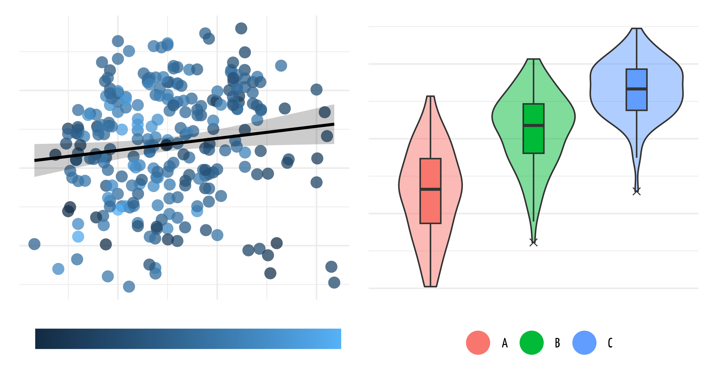
Data Viz
For Science
& How It Earned Me
Two Free Dinners
Daniel Roelfs
“We’re planning on celebrating Oktoberfest at 26th October at PSI (HUP, Promenta, and hopefully Brainmint) but need to organize a seminar beforehand.”
– Valerie
Chapter X
Picking the right tool
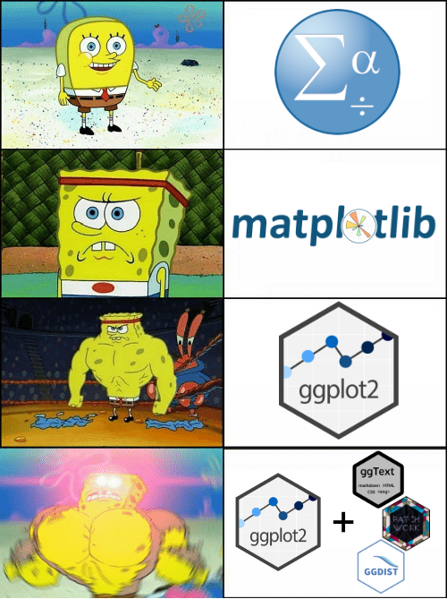
Chapter X
The Basics
Defaults are meh
colors_guide_settings_c <- guide_colorbar(
direction = "horizontal", barwidth = 15, barheight = 1, ticks = FALSE)
colors_guide_settings_d <- guide_legend(
override.aes = list(shape = 21, size = 8, stroke = 0, alpha = 1))
colors_guide_labs <- LETTERS[seq(3)]
plot_colors_base_c <- taylor::taylor_all_songs |>
ggplot(aes(x = tempo, y = energy, fill = danceability)) +
geom_point(shape = 21, size = 4, stroke = 0, alpha = 0.75) +
geom_smooth(method = "lm", color = "black", fill = "black", alpha = 0.2) +
labs(
x = NULL,
y = NULL,
fill = NULL
) +
scale_fill_continuous(guide = colors_guide_settings_c) +
theme_minimal(base_family = "custom") +
theme(
plot.title = element_markdown(size = 80),
axis.text = element_blank(),
legend.position = "bottom",
legend.text = element_blank()
)
plot_colors_base_d <- taylor::taylor_all_songs |>
drop_na(mode_name) |>
mutate(tempo_binned = cut_interval(energy, n = 3)) |>
ggplot(aes(x = tempo_binned, y = loudness, fill = tempo_binned)) +
geom_violin(alpha = 0.5, key_glyph = "point") +
geom_boxplot(width = 0.2, outlier.shape = 4, outlier.size = 2,
show.legend = FALSE) +
labs(
x = NULL,
y = NULL,
fill = NULL
) +
scale_fill_discrete(labels = colors_guide_labs,
guide = colors_guide_settings_d) +
theme_minimal(base_family = "custom") +
theme(
plot.title = element_markdown(size = 80),
axis.text = element_blank(),
legend.position = "bottom",
legend.text = element_text(size = 40),
panel.grid.major.x = element_blank()
)
plot_colors_base_c + plot_colors_base_dBetter alternatives: viridis

Better alternatives: {scico}

Discrete scales
R Color Palettes by Emil Hvitveldt - Website collecting a ton of discrete color palettes
coolors.co - Randomly generate a set of colors
{colorblindr} - Test your plots for CVD accessiblity directly in R
{nord} - Muted color palettes based on UI systems and a group of Canadian artists
{wesanderson} - Color palette based on Wes Anderson film aesthetics
{dutchmasters} - Color palette based on famous paintings by Dutch artists
{taylor} - Color palette based on Taylor Swift album covers
Some examples
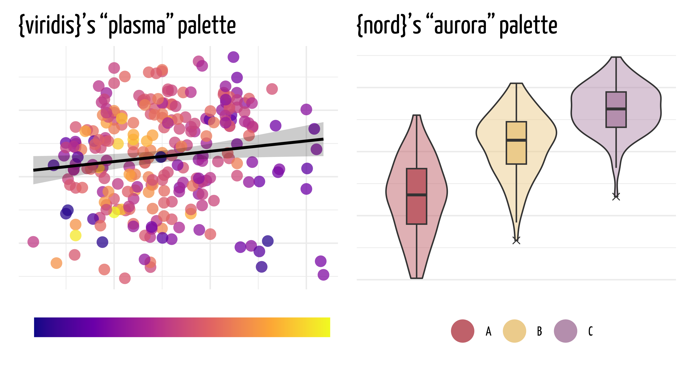
(plot_colors_base_c +
labs(title = "{viridis}'s \"plasma\" palette") +
scale_fill_viridis_c(option = "plasma", guide = colors_guide_settings_c)) +
(plot_colors_base_d +
labs(title = "{nord}'s \"aurora\" palette") +
nord::scale_fill_nord(palette = "aurora",
labels = colors_guide_labs,
guide = colors_guide_settings_d))Some more examples
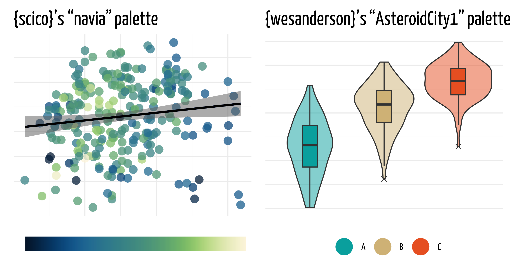
(plot_colors_base_c +
labs(title = "{scico}'s \"navia\" palette") +
scale_fill_scico(palette = "navia", guide = colors_guide_settings_c)) +
(plot_colors_base_d +
labs(title = "{wesanderson}'s \"AsteroidCity1\" palette") +
scale_fill_manual(labels = colors_guide_labs,
values = wesanderson::wes_palette("AsteroidCity1"),
guide = colors_guide_settings_d))Chapter X
Dare to rebel
Move the title to the plot area
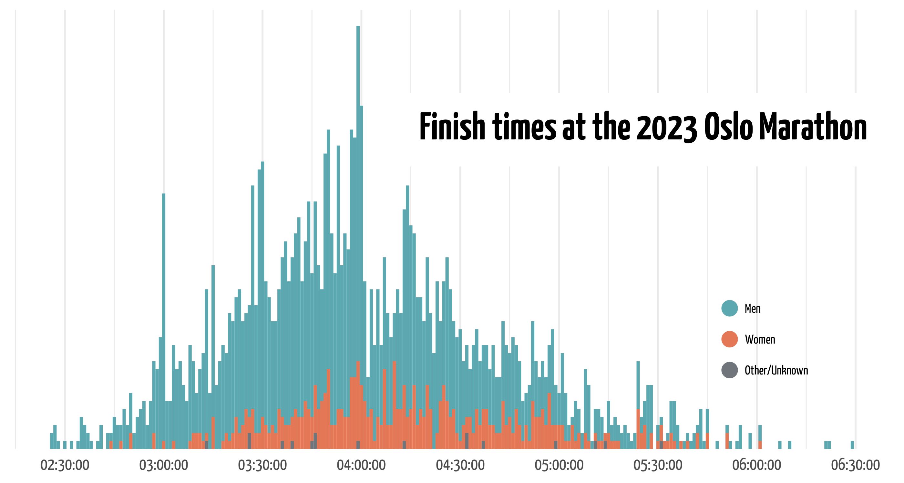
data_marathon |>
ggplot(aes(x = time, fill = sex)) +
geom_histogram(alpha = 0.9, binwidth = 60, key_glyph = "point") +
geom_richtext(data = tibble(), aes(x = 4.2 * 60^2, y = 40,
label = "Finish times at the 2023 Oslo Marathon"),
family = "custom", size = 32, fontface = "bold", hjust = 0,
inherit.aes = FALSE,
label.padding = unit(0.75, "lines"), label.color = NA) +
labs(
x = NULL,
y = NULL,
fill = NULL
) +
scale_x_time(breaks = scales::date_breaks("30 mins")) +
scale_y_continuous(breaks = NULL, expand = expansion(add = c(0, 2))) +
scale_fill_manual(values = c("#4A9EA8", "#E16843", "#5F666D"),
guide = guide_legend(override.aes = list(shape = 21, size = 4))) +
theme_minimal(base_family = "custom") +
theme(
legend.title = element_markdown(size = 0),
legend.position = c(0.85, 0.25),
legend.text = element_text(size = 30),
axis.text = element_text(size = 40)
)Label everything
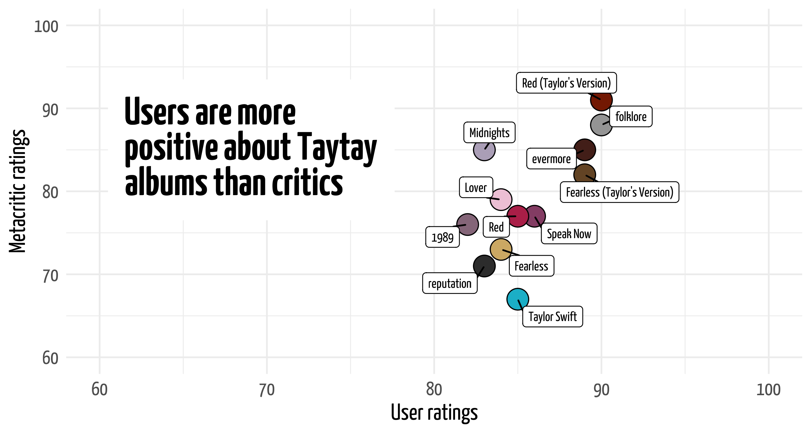
taylor::taylor_albums |>
drop_na() |>
ggplot(aes(x = user_score * 10, y = metacritic_score, fill = album_name)) +
geom_point(size = 6, shape = 21, show.legend = FALSE) +
ggrepel::geom_label_repel(aes(label = album_name), size = 12,
min.segment.length = 0,
max.overlaps = 15, seed = 42,
fill = "white", family = "custom") +
geom_richtext(data = tibble(), aes(x = 60.5, y = 85,
label = "Users are more<br>positive about Taytay<br>albums than critics"),
family = "custom", size = 36, fontface = "bold", hjust = 0, lineheight = 0,
inherit.aes = FALSE,
label.padding = unit(0.75, "lines"), label.color = NA) +
labs(
x = "User ratings",
y = "Metacritic ratings"
) +
scale_x_continuous(limits = c(60, 100)) +
scale_y_continuous(limits = c(60, 100)) +
taylor::scale_fill_albums() +
theme_minimal(base_family = "custom") +
theme(
axis.title = element_markdown(size = 60),
axis.text = element_markdown(size = 50)
)Label averages
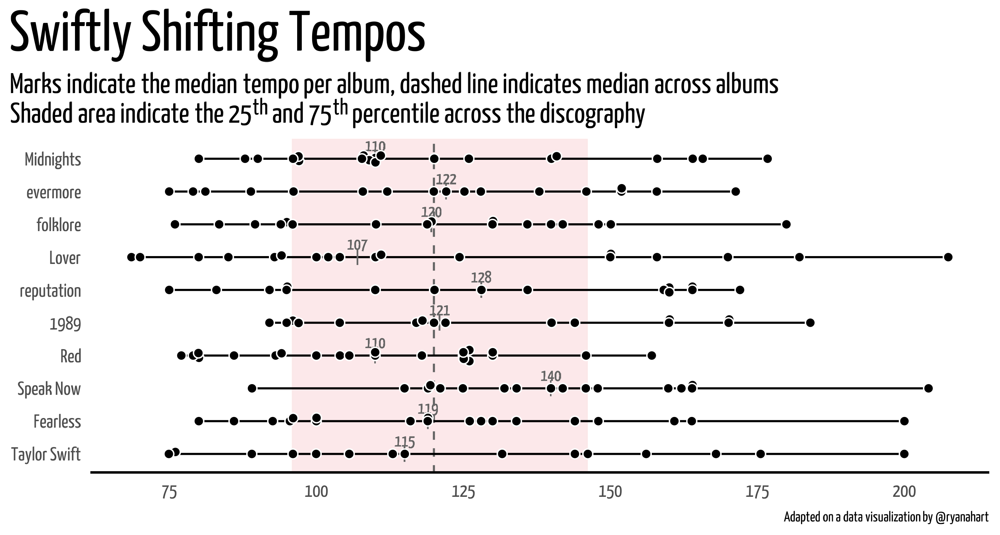
data_taylor_songs <- taylor::taylor_all_songs |>
filter(str_detect(album_name, "Taylor's Version", negate = TRUE),
str_detect(album_name, "Holiday Collection", negate = TRUE)) |>
drop_na(tempo) |>
mutate(cat_median = median(tempo),
cat_q25 = quantile(tempo, probs = 0.25),
cat_q75 = quantile(tempo, probs = 0.75)) |>
group_by(album_name) |>
mutate(album_median = median(tempo),
album_mad = mad(tempo))
data_taylor_songs |>
ggplot(aes(x = tempo, y = reorder(album_name, album_release))) +
geom_rect(aes(xmin = cat_q25, xmax = cat_q75, ymin = -Inf, ymax = Inf),
fill = "#fbe8e9", color = "#fbe8e9", alpha = 0.6) +
geom_vline(aes(xintercept = cat_median), color = "grey40", linetype = "dashed") +
geom_line(linewidth = 0.5, color = "black") +
geom_text(aes(x = album_median, label = round(album_median, 0)),
family = "custom", size = 12, color = "grey40", nudge_y = 0.4) +
geom_point(aes(x = album_median), color = "grey40", shape = "|", size = 12) +
geom_segment(aes(x = -Inf, xend = Inf, y = -Inf, yend = -Inf), linewidth = 1) +
geom_beeswarm(shape = 21, color = "white", fill = "black", size = 2) +
labs(
title = "Swiftly Shifting Tempos",
subtitle = "Marks indicate the median tempo per album, dashed line indicates median across albums<br>Shaded area indicate the 25<sup>th</sup> and 75<sup>th</sup> percentile across the discography",
x = NULL,
y = NULL,
caption = "Adapted on a data visualization by @ryanahart"
) +
scale_x_continuous(breaks = c(75, 100, 125, 150, 175, 200)) +
theme_minimal(base_family = "custom") +
theme(
panel.grid = element_blank(),
plot.title.position = "plot",
plot.title = element_markdown(size = 120),
plot.subtitle = element_markdown(size = 60, lineheight = 0),
axis.text = element_markdown(size = 40),
plot.caption = element_markdown(size = 30)
)Chapter X
Alternative plot types
Boxplots vs. vagina plots
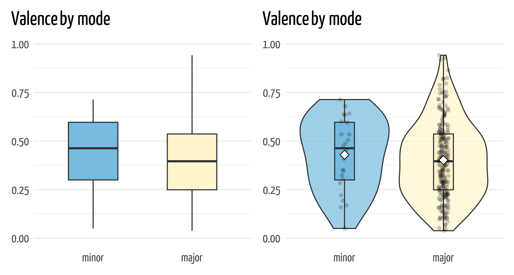
boxplot_vagina_base <- taylor::taylor_all_songs |>
drop_na(mode_name) |>
mutate(mode_name = fct_rev(mode_name)) |>
ggplot(aes(x = mode_name, y = valence, fill = mode_name)) +
labs(
title = "Valence by mode",
x = NULL,
y = NULL,
) +
taylor::scale_fill_taylor_d(guide = "none") +
scale_y_continuous(limits = c(0, 1)) +
theme_minimal(base_family = "custom") +
theme(
plot.title.position = "plot",
plot.title = element_markdown(size = 80),
axis.text = element_markdown(size = 50),
panel.grid.major.x = element_blank()
)
(boxplot_vagina_base +
geom_boxplot(width = 0.5, outlier.shape = 4, outlier.size = 1.5)) +
(boxplot_vagina_base +
geom_violin(alpha = 0.7) +
geom_boxplot(width = 0.2, outlier.shape = NA, outlier.size = 3) +
geom_jitter(width = 0.05, size = 2, alpha = 0.2, stroke = 0) +
geom_point(data = . %>% group_by(mode_name) %>% summarise(mean = mean(valence)),
aes(y = mean), fill = "white", shape = 23, size = 3))Simple vs fancy scatterplots
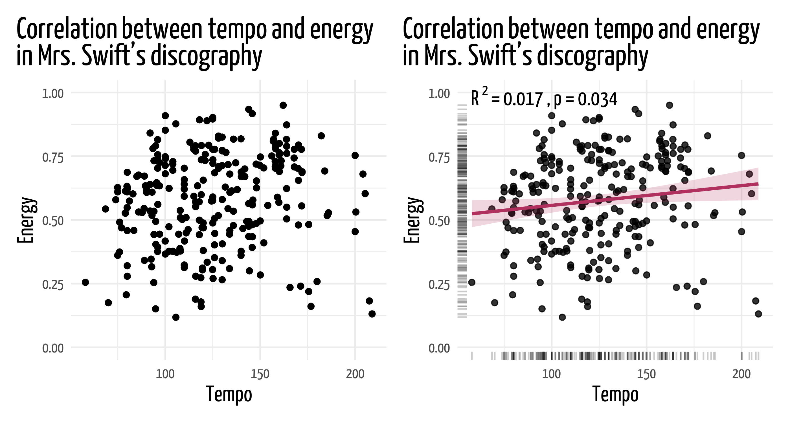
scatter_fancy_base <- taylor::taylor_all_songs |>
ggplot(aes(x = tempo, y = energy)) +
labs(
title = "Correlation between tempo and energy<br>in Mrs. Swift's discography",
x = "Tempo",
y = "Energy",
fill = NULL
) +
scale_y_continuous(limits = c(0, 1)) +
theme_minimal(base_family = "custom") +
theme(
plot.title.position = "plot",
plot.title = element_markdown(size = 80, lineheight = 0),
axis.title = element_markdown(size = 60),
axis.text = element_text(size = 40),
legend.position = "bottom",
legend.text = element_blank()
)
(scatter_fancy_base +
geom_point()) +
(scatter_fancy_base +
ggpubr::stat_cor(aes(
label = paste(after_stat(rr.label), after_stat(p.label), sep = "~`,`~")),
label.y = 0.98, size = 20, family = "custom") +
geom_point(alpha = 0.8) +
geom_rug(alpha = 0.2) +
geom_smooth(method = "lm", color = "maroon", fill = "maroon", alpha = 0.2))Fancy geoms and labels
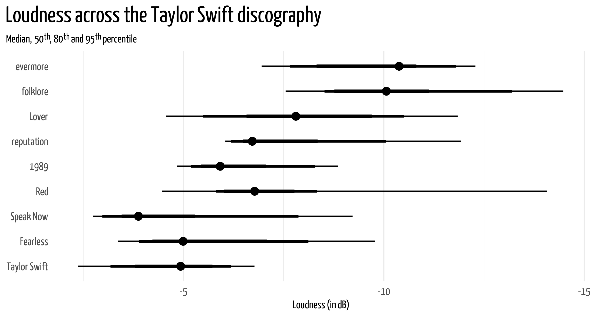
ggdist_pi_base <- taylor::taylor_all_songs |>
mutate(album_name = fct_relevel(album_name, taylor::album_levels)) |>
drop_na(album_name) |>
filter(str_detect(album_name, "Taylor's Version", negate = TRUE),
!ep) |>
select(album_name, loudness) |>
group_by(album_name) |>
median_qi(.width = c(0.5, 0.8, 0.95)) |>
drop_na() |>
ggplot(aes(x = loudness, y = album_name,
xmin = .lower, xmax = .upper)) +
labs(
title = "Loudness across the Taylor Swift discography",
subtitle = "Median, 50<sup>th</sup>, 80<sup>th</sup> and 95<sup>th</sup> percentile",
x = NULL,
y = NULL
) +
theme_minimal(base_family = "custom") +
theme(
plot.title.position = "plot",
plot.title = element_markdown(size = 80),
plot.subtitle = element_markdown(size = 40),
axis.text = element_markdown(size = 40),
panel.grid.major.y = element_blank()
)
(ggdist_pi_base +
geom_pointinterval() +
labs(
x = "Loudness (in dB)"
) +
scale_x_continuous(trans = "reverse") +
theme(
axis.title = element_markdown(size = 40),
)
) &
plot_annotation(
title = "What you submit...",
theme = theme(
plot.title = element_markdown(family = "custom", size = 90, lineheight = 0)
)
)Fancy geoms and labels
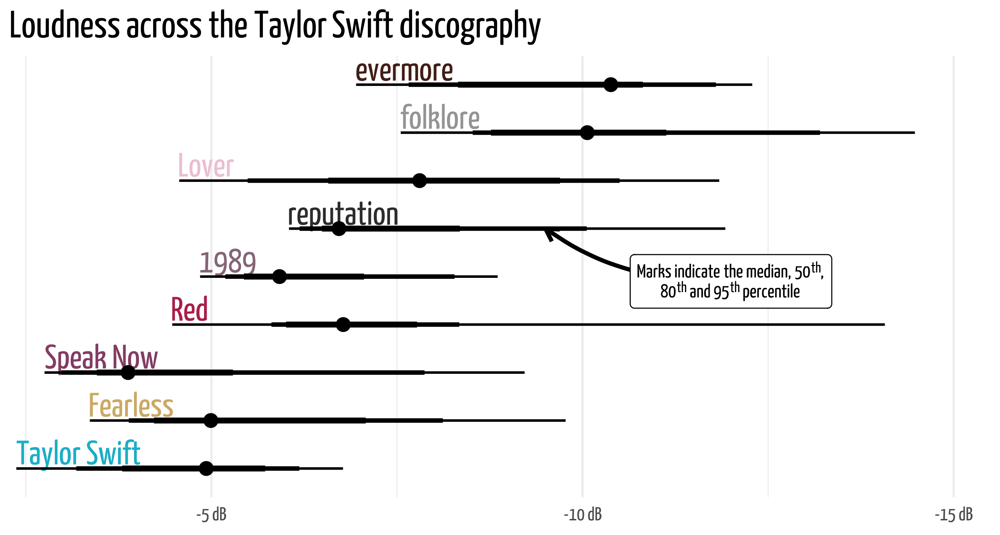
(ggdist_pi_base +
geom_text(data = . %>% group_by(album_name) %>% summarise(label_pos = max(.upper)),
aes(x = label_pos, y = album_name,
label = album_name, color = album_name),
family = "custom", size = 25,
nudge_y = 0.33, hjust = 0,
inherit.aes = FALSE, show.legend = FALSE) +
geom_pointinterval() +
scale_x_continuous(trans = "reverse",
labels = scales::label_number(suffix = " dB"),
expand = expansion(add = c(0, 1))) +
taylor::scale_color_albums() +
theme(
axis.text.y = element_blank(),
)
) &
plot_annotation(
title = "What you present...",
theme = theme(
plot.title = element_markdown(family = "custom", size = 90, lineheight = 0)
)
)Fancy geoms (cont.)
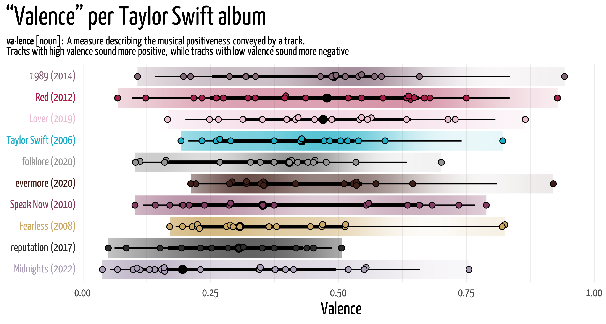
taylor::taylor_all_songs |>
filter(str_detect(album_name, "Holiday Collection", negate = TRUE),
str_detect(album_name, "Taylor's Version", negate = TRUE)) |>
drop_na(valence, album_name) |>
mutate(album_label = str_glue("{album_name} ({year(album_release)})")) |>
ggplot(aes(x = valence, y = reorder(album_label, valence), fill = album_name)) +
stat_gradientinterval(position = "dodge", fill_type = "gradient") +
geom_beeswarm(shape = 21, size = 2) +
labs(
title = "\"Valence\" per Taylor Swift album",
subtitle = "**va·lence** [noun]: A measure describing the musical positiveness conveyed by a track.<br>Tracks with high valence sound more positive, while tracks with low valence sound more negative",
x = "Valence",
y = NULL
) +
scale_x_continuous(limits = c(0, 1), expand = expansion(add = c(0, 0.01))) +
taylor::scale_fill_albums(guide = "none") +
theme_minimal(base_family = "custom") +
theme(
plot.title.position = "plot",
plot.title = element_markdown(size = 90),
plot.subtitle = element_markdown(size = 40, lineheight = 0),
axis.text = element_markdown(size = 40),
axis.title = element_markdown(size = 60),
panel.grid.major.y = element_blank()
)Resources
Designing Charts in R, Cédric Scherer, Masterclass for the Data Visualization Society (2023), slides for the presentation